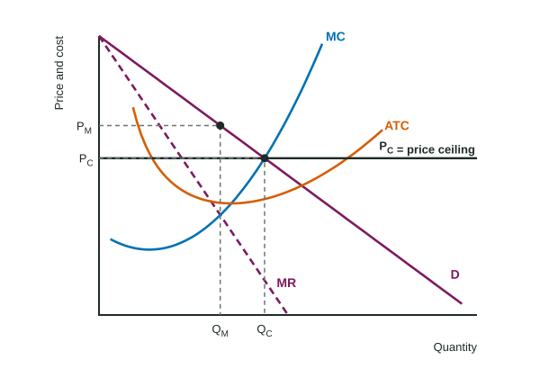

A highest legal price causes shortages in a market with many sellers: that is what you learned in Topic 2.8. Put the same kind of rule on the only power company in a region and it can do the opposite: more electricity sold, at a lower price. A minimum wage can cut jobs in one town and add them in the next. The lesson of this topic is that the effect of a policy depends on the market structure it lands in.
A price ceiling on a monopoly
A monopoly restricts output because selling one more unit means cutting the price on every unit, so its marginal revenue is below its price (Topic 4.2). It produces where MR = MC and charges the higher price read from demand, so P > MC and there is deadweight loss.
Now suppose a regulator sets a price ceiling below the monopoly price. Up to the demand curve, the firm can sell each extra unit at the ceiling price without cutting the price on the others, so its marginal revenue is flat at the ceiling. It now produces where MC meets the ceiling. If the ceiling is set where demand meets MC, the firm produces the allocatively efficient quantity.

| Binding price ceiling | Competitive market | Monopoly (ceiling between PM and where D meets MC) |
|---|---|---|
| Quantity | falls (quantity supplied falls) | rises |
| Price | falls | falls |
| Deadweight loss | appears | shrinks |
A ceiling set below the point where demand meets MC brings shortages back, even for a monopoly: the firm will not supply units whose MC is above the ceiling.
Regulating a natural monopoly
A natural monopoly has ATC falling over the whole range of demand, so one firm can supply the market more cheaply than several. Regulators usually let it be the only seller but control its price. There are three prices to know.
![A natural monopoly graph with Price and cost on the vertical axis and Quantity on the horizontal axis. ATC falls over the whole range of demand and stays above the flat MC curve. Unregulated, the firm produces QM where MR = MC and charges PM from the demand curve. The fair-return price PF, where demand meets ATC, gives a larger quantity QF and zero economic profit. The socially optimal price PS, where demand meets MC, gives the largest quantity QS, but there price is below ATC, so the firm makes a loss.](../figures/intervention-structures-natural.svg)
Worked example: Brightwater Power (invented). Demand gives prices of $6, $4 and $2 at 4, 6 and 8 thousand units. MC is $2 everywhere; ATC is $5, $4 and $3.50 at those quantities; MR = MC = $2 at 4 thousand units.
- Unregulated: Q = 4 (MR = MC), P = $6 from demand. Profit = (P - ATC) × Q = thousand dollars.
- Fair-return price: where demand meets ATC: P = $4 at 6 thousand units. P = ATC, so economic profit is zero (a normal profit). More output, less deadweight loss.
- Socially optimal price: where demand meets MC: P = $2 at 8 thousand units, the efficient quantity. But ATC is $3.50, so the firm loses thousand dollars and would leave without a subsidy of that size.
The trade-off is between efficiency and the firm's survival without public money. Readers lose points for reading the fair-return price where demand meets MC, or the socially optimal price where demand meets ATC: keep them straight.
Taxes and subsidies: lump-sum or per unit
A lump-sum tax or subsidy is a fixed amount, whatever the output. It raises or lowers total cost and ATC, but not MC, so a profit-maximizing firm in any market structure keeps the same quantity and price; only its profit changes. A per-unit tax or subsidy changes MC, so it changes output.
Worked example: a monopoly ferry. The Corvel Ferry Company (invented) carries 50 riders a day at $12, with total revenue $600 and total cost $400, so profit is $200.
- Lump-sum tax of $150 a day: MC is unchanged, so still 50 riders at $12. Profit = dollars.
- Tax of $2 per rider instead: MC rises by $2, so MR = MC at fewer riders, and the price read from demand rises. Output moves further below the efficient quantity.
A lump-sum tax does not raise MC, price or quantity. It is the right tool if the goal is to take some of a monopoly's profit without changing its output, and the wrong tool if the goal is to change the quantity.
A minimum wage in two labor markets
In a competitive labor market, a minimum wage above equilibrium works like a price floor: firms move up their labor demand and hire fewer workers, while more people want jobs, so there is a surplus of labor. In a monopsony (Topic 5.4), a minimum wage between the monopsony wage and the competitive wage makes MFC flat at the minimum wage up to labor supply, so the employer hires more workers at a higher wage.
The same pattern runs through the topic: ask what the policy does to the firm's marginal revenue or marginal cost. If it changes neither, output does not change.